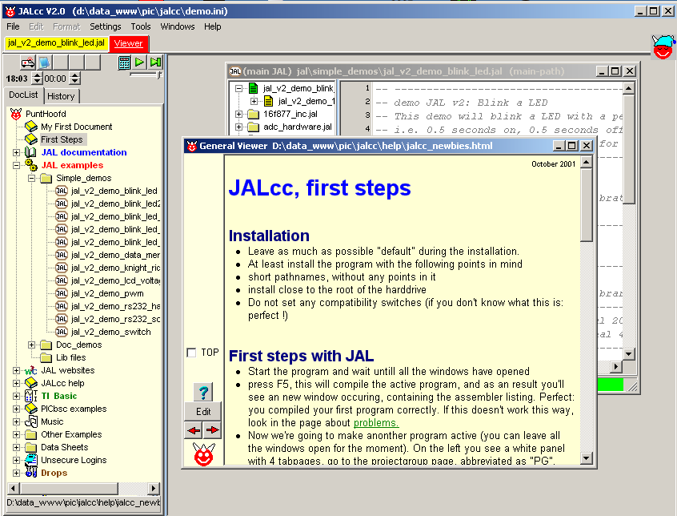

August 2006
JALcc, Quick Introduction
Installation
After the installation has finished, you should see exactly the following image:

On the left a document list where you can organize your documents, links and more. The document list has full drag and drop facilities.
On the right one open JAL program and the general Viewer (which shows the last selected tab in the document list). Each document window has an associated tab. For all visible elements yields, see what's under the Right-Mouse-button, and try hotkeys (line double-click, Enter, Ctrl-Enter, F9, Ctrl-F9 and many more). All information can be found in the help files (also available in the document list).
First Steps
Have fun,
Stef Mientki